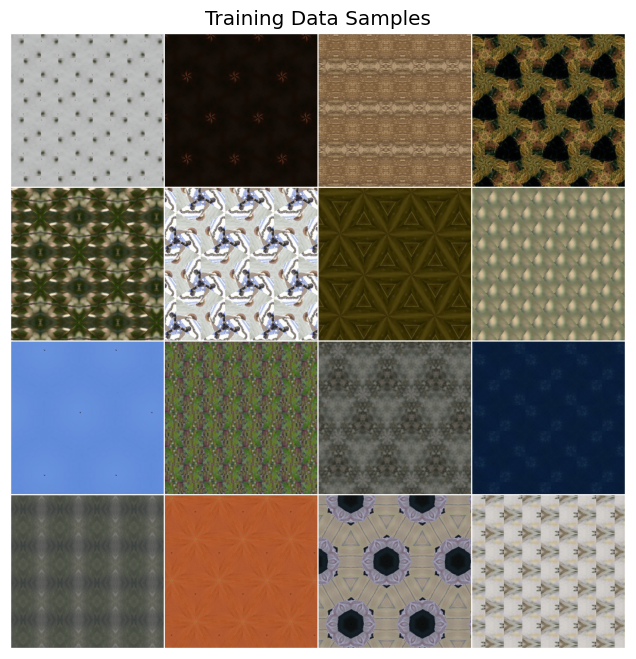

| Parameter | Standard AE | β-VAE |
|---|---|---|
| Model Type | Convolutional Autoencoder | Beta Variational Autoencoder |
| Input Size | 256×256×3 (RGB) | |
| Parameters | 464,739 | 464,931 |
| Latent Dimensions | 16,384 (flattened 16×16×64) | 64 (μ, σ parameterized) |
| Base Channels | 32 | |
| Total Parameters | 464,739 | 464,931 |
| Encoder | Conv2d + BatchNorm + LeakyReLU (4 blocks) | |
| Decoder | ConvTranspose2d + BatchNorm + ReLU (4 blocks) | |
| Final Activation | Tanh | |
| Learning Rate | 0.001 | |
| Optimizer | AdamW | Adam |
| Scheduler | CosineAnnealingLR | - |
| Batch Size | 32 | |
| Early Stopping | Patience = 5 | |
| Training Samples | 76,500 | |
| Validation Samples | 8,500 | |
| Test Samples | 355 | |
| Number of Classes | 17 wallpaper symmetry groups | |
Standard Autoencoder — Deterministic Baseline (Best Reconstruction)
The Standard Convolutional Autoencoder represents our deterministic baseline. Unlike VAEs, it directly maps inputs to a fixed latent vector without probabilistic sampling. This approach maximizes reconstruction fidelity by not enforcing any prior distribution on the latent space.
🏆 Key Achievement: The Standard Autoencoder achieves the lowest Test MSE (0.061)
among all models, with the fastest training time (1h 8min). It excels at preserving
fine details in reconstructions but produces a high-dimensional, unstructured latent space.
Architecture Details
ConvAutoencoder(
(encoder): Sequential(
Conv2d(3, 32, kernel=3, stride=2, padding=1) → BatchNorm2d → LeakyReLU(0.2)
Conv2d(32, 64, kernel=3, stride=2, padding=1) → BatchNorm2d → LeakyReLU(0.2)
Conv2d(64, 128, kernel=3, stride=2, padding=1) → BatchNorm2d → LeakyReLU(0.2)
Conv2d(128, 64, kernel=3, stride=2, padding=1) → BatchNorm2d → LeakyReLU(0.2)
) → Output: [B, 64, 16, 16] = 16,384 dimensions
(decoder): Sequential(
ConvTranspose2d(64, 128, kernel=4, stride=2, padding=1) → BatchNorm2d → ReLU
ConvTranspose2d(128, 64, kernel=4, stride=2, padding=1) → BatchNorm2d → ReLU
ConvTranspose2d(64, 32, kernel=4, stride=2, padding=1) → BatchNorm2d → ReLU
ConvTranspose2d(32, 3, kernel=4, stride=2, padding=1) → Tanh
)
)Dataset Overview

Sample images from the 17 wallpaper symmetry groups: cm, cmm, p1, p2, p3, p31m, p3m1, p4, p4g, p4m, p6, p6m, pg, pgg, pm, pmg, pmm
Training Progress & Convergence
Training was conducted for 21 epochs before early stopping was triggered at epoch 16 (best validation loss). The deterministic nature of the model led to rapid and stable convergence.
| Metric | Value |
|---|---|
| Total Epochs Trained | 30 (early stopping at 21) |
| Final Training Loss | 0.009903 |
| Final Validation Loss | 0.009579 |
| Best Validation Loss | 0.009285 |
| Training Time | 1 hour 8 minutes (fastest) |
Reconstruction Results
The Standard Autoencoder produces sharp, detailed reconstructions that closely match the original images. Fine patterns and textures are well-preserved across all symmetry classes.

Training history showing loss convergence

Original vs Reconstructed comparison
Per-Class Reconstruction Comparison

Comprehensive per-class reconstruction examples showing original (top) and reconstructed (bottom) images for all 17 symmetry groups
Latent Space Analysis - t-SNE & PCA

t-SNE visualization showing class separation in latent space

PCA projection (2D captures only 14.1% of variance)
PCA analysis: 272 components needed to explain 95% of variance

Error Distribution Analysis
Detailed error distribution analysis reveals the reconstruction quality across the test set.
| Statistic | Value |
|---|---|
| Total Test Samples | 355 |
| Mean Error | 0.060758 |
| Std Error | 0.065446 |
| Min Error | 0.000499 |
| Max Error | 0.513804 |
| Median Error | 0.038702 |
Feature Maps

Encoder feature map visualization

Individual Channel Feature Maps

Encoder feature map visualization

Individual Channel Feature Maps


Latent Space Statistics
| Statistic | Value | Note |
|---|---|---|
| Latent Vector Dimension | 16,384 | Much larger than VAE (64) |
| Mean Latent Value | 1.078246 | Not centered at 0 (no regularization) |
| Std Latent Value | 0.920277 | Uncontrolled variance |
| Min Latent Value | -3.047380 | Wide range |
| Max Latent Value | 12.810332 | Unbounded positive values |
| Sparsity (% zeros) | 0.84% | Low sparsity |
Class-wise Reconstruction Performance
Test MSE Loss: 0.060758 — the best among all models tested. The class-wise analysis shows consistent performance with the expected pattern of simpler symmetries being easier to reconstruct.
| Rank | Class | Mean MSE | Std | Performance |
|---|---|---|---|---|
| 1 | p1 | 0.030025 | ±0.027309 | Best |
| 2 | pm | 0.036713 | ±0.030132 | Excellent |
| 3 | cm | 0.043554 | ±0.033758 | Excellent |
| 4 | p3m1 | 0.046524 | ±0.038429 | Excellent |
| 5 | pmg | 0.049887 | ±0.038073 | Good |
| 6 | p3 | 0.052804 | ±0.043831 | Good |
| 7 | p31m | 0.053864 | ±0.036063 | Good |
| 8 | p2 | 0.058557 | ±0.058189 | Good |
| 9 | p4m | 0.058996 | ±0.035134 | Good |
| 10 | pg | 0.061262 | ±0.060334 | Average |
| 11 | cmm | 0.062279 | ±0.075607 | Average |
| 12 | p4g | 0.064847 | ±0.051951 | Average |
| 13 | pmm | 0.068911 | ±0.051598 | Average |
| 14 | pgg | 0.074798 | ±0.081493 | Below Average |
| 15 | p6m | 0.087812 | ±0.075404 | Below Average |
| 16 | p4 | 0.107977 | ±0.126374 | Difficult |
| 17 | p6 | 0.110968 | ±0.096030 | Worst |


/image.png)
/image 1.png)
/image 2.png)
/image 3.png)
/image 4.png)
/image 5.png)
/image 6.png)
/image 7.png)
/image 8.png)
/image 9.png)
/image 10.png)
/image 11.png)
/image 12.png)
/image 13.png)
/image 14.png)